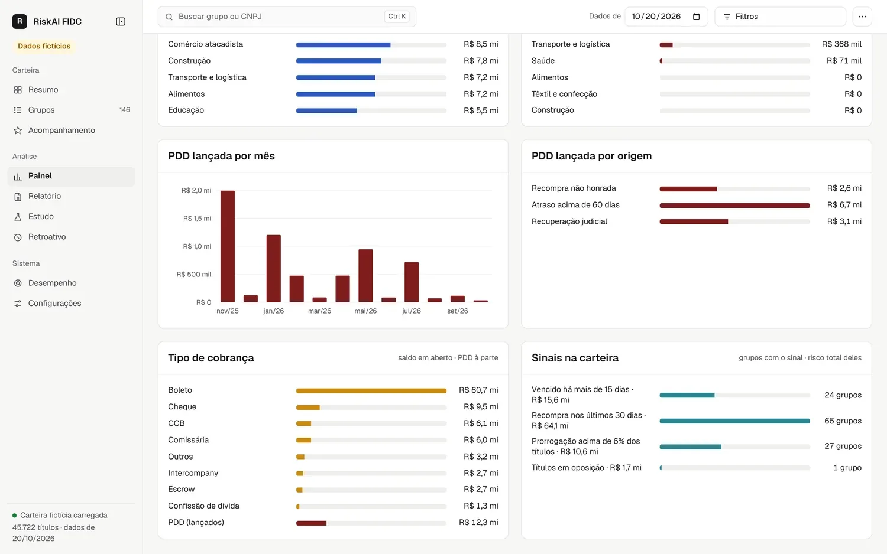
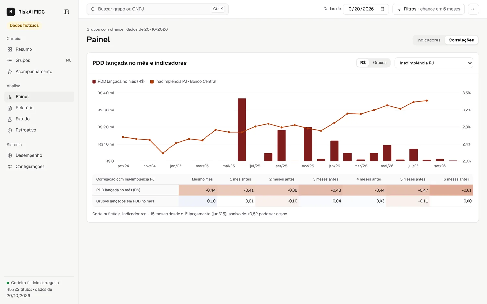

Em produção · comitê de crédito
RiskAI FIDC
Leitura de risco e deterioração da carteira, por cedente e grupo econômico, para o comitê decidir limites e continuidade da relação.



- Problema
- O comitê decide se ajusta o limite ou encerra a relação com um cedente. Precisa ver cedo onde a carteira piora.
- O que faz
- Mostra o estado de cada cedente (ativo, livro vencido, dormente, sem exposição) e a taxa medida de cada estado. Aponta os sinais que antecedem a piora: freada da originação, recompras e prorrogações. Lista os grupos que cruzaram o marco nas últimas 52 semanas e compara a PDD do mês com indicadores do BCB e do IBGE.
- Como
- Validação fora do tempo, com critério de aprovação escrito antes de ver o resultado. Dados da época em cada corte, para o modelo nunca enxergar o futuro. Retreino diário que só publica modelos aprovados na validação, com recuo automático para a taxa por faixa se o realizado sair do previsto.
- Situação
- Em produção. As telas são da demonstração, sobre carteira fictícia.